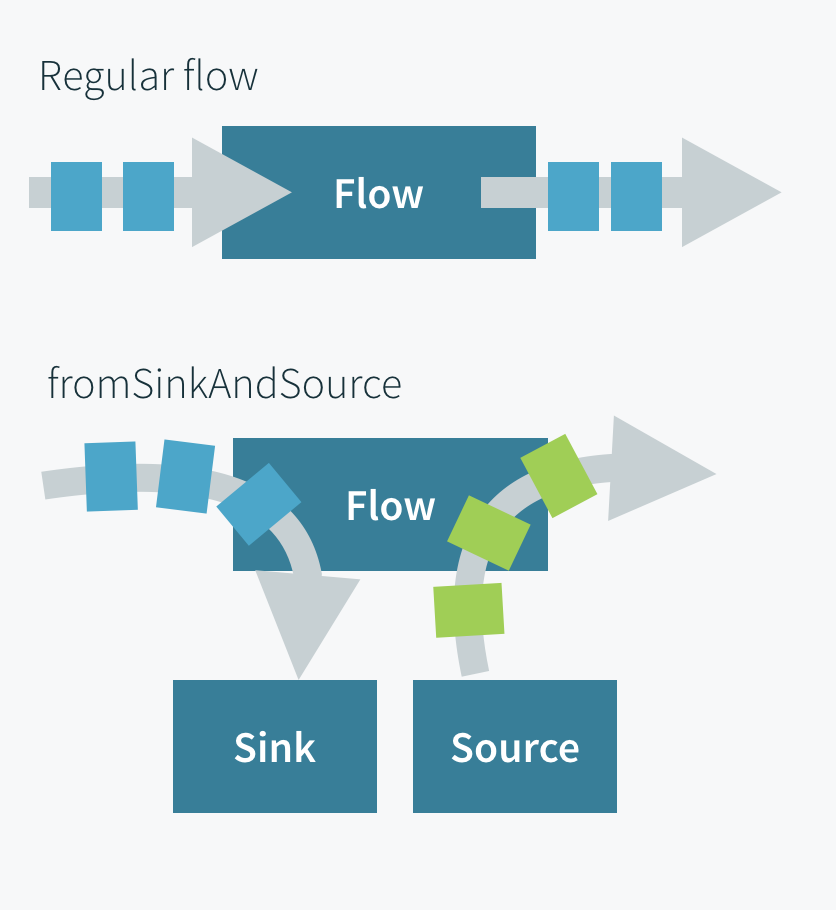

Flow.fromSinkAndSource
Creates a Flow from a Sink and a Source where the Flow’s input will be sent to the Sink and the Flow ’s output will come from the Source.
Flow operators composed of Sinks and Sources
Signature
Flow.fromSinkAndSourceFlow.fromSinkAndSource
Description
fromSinkAndSource combines a separate Sink and Source into a Flow.
Useful in many cases where an API requires a Flow but you want to provide a Sink and Source whose flows of elements are decoupled.
Note that termination events, like completion and cancellation, are not automatically propagated through to the “other-side” of the such-composed Flow. The Source can complete and the sink will continue to accept elements.
Use fromSinkAndSourceCoupled if you want to couple termination of both of the ends.
Examples
One use case is constructing a TCP server where requests and responses do not map 1:1 (like it does in the Echo TCP server sample where every incoming test is echoed back) but allows separate flows of elements from the client to the server and from the server to the client.
This example cancels the incoming stream, not allowing the client to write more messages, switching the TCP connection to “half-closed”, but keeps streaming periodic output to the client:
- Scala
-
source
// close in immediately val sink = Sink.cancelled[ByteString] // periodic tick out val source = Source.tick(1.second, 1.second, "tick").map(_ => ByteString(System.currentTimeMillis().toString + "\n")) val serverFlow = Flow.fromSinkAndSource(sink, source) Tcp(system).bind("127.0.0.1", 9999, halfClose = true).runForeach { incomingConnection => incomingConnection.handleWith(serverFlow) } - Java
-
source
// close in immediately Sink<ByteString, NotUsed> sink = Sink.cancelled(); // periodic tick out Source<ByteString, Cancellable> source = Source.tick(Duration.ofSeconds(1), Duration.ofSeconds(1), "tick") .map(tick -> ByteString.fromString(System.currentTimeMillis() + "\n")); Flow<ByteString, ByteString, NotUsed> serverFlow = Flow.fromSinkAndSource(sink, source); Source<Tcp.IncomingConnection, CompletionStage<Tcp.ServerBinding>> connectionStream = Tcp.get(system) .bind( "127.0.0.1", // interface 9999, // port 100, // backlog Collections.emptyList(), // socket options true, // Important: half close enabled Optional.empty() // idle timeout ); connectionStream.runForeach( incomingConnection -> incomingConnection.handleWith(serverFlow, system), system);
With this server running you could use telnet 127.0.0.1 9999 to see a stream of timestamps being printed, one every second.
The following sample is a little bit more advanced and uses the MergeHubMergeHub to dynamically merge incoming messages to a single stream which is then fed into a BroadcastHubBroadcastHub which emits elements over a dynamic set of downstreams allowing us to create a simplistic little TCP chat server in which a text entered from one client is emitted to all connected clients.
- Scala
-
source
val (sink, source) = MergeHub.source[String].toMat(BroadcastHub.sink[String])(Keep.both).run() val framing = Framing.delimiter(ByteString("\n"), 1024) val sinkWithFraming = framing.map(bytes => bytes.utf8String).to(sink) val sourceWithFraming = source.map(text => ByteString(text + "\n")) val serverFlow = Flow.fromSinkAndSource(sinkWithFraming, sourceWithFraming) Tcp(system).bind("127.0.0.1", 9999).runForeach { incomingConnection => incomingConnection.handleWith(serverFlow) } - Java
-
source
Pair<Sink<String, NotUsed>, Source<String, NotUsed>> pair = MergeHub.of(String.class).toMat(BroadcastHub.of(String.class), Keep.both()).run(system); Sink<String, NotUsed> sink = pair.first(); Source<String, NotUsed> source = pair.second(); Flow<ByteString, ByteString, NotUsed> framing = Framing.delimiter(ByteString.fromString("\n"), 1024); Sink<ByteString, NotUsed> sinkWithFraming = framing.map(bytes -> bytes.utf8String()).to(pair.first()); Source<ByteString, NotUsed> sourceWithFraming = source.map(text -> ByteString.fromString(text + "\n")); Flow<ByteString, ByteString, NotUsed> serverFlow = Flow.fromSinkAndSource(sinkWithFraming, sourceWithFraming); Tcp.get(system) .bind("127.0.0.1", 9999) .runForeach( incomingConnection -> incomingConnection.handleWith(serverFlow, system), system);
The same patterns can also be applied to Pekko HTTP WebSockets which also have an API accepting a Flow of messages.
If we would replace the fromSinkAndSource here with fromSinkAndSourceCoupled it would allow the client to close the connection by closing its outgoing stream.
fromSinkAndSource can also be useful when testing a component that takes a Flow allowing for complete separate control and assertion of incoming and outgoing elements using stream testkit test probes for sink and source:
- Scala
-
source
val inProbe = TestSubscriber.probe[String]() val outProbe = TestPublisher.probe[String]() val testFlow = Flow.fromSinkAndSource(Sink.fromSubscriber(inProbe), Source.fromPublisher(outProbe)) myApiThatTakesAFlow(testFlow) inProbe.expectNext("first") outProbe.expectRequest() outProbe.sendError(new RuntimeException("test error")) // ... - Java
-
source
TestSubscriber.Probe<String> inProbe = TestSubscriber.probe(system); TestPublisher.Probe<String> outProbe = TestPublisher.probe(0, system); Flow<String, String, NotUsed> testFlow = Flow.fromSinkAndSource(Sink.fromSubscriber(inProbe), Source.fromPublisher(outProbe)); myApiThatTakesAFlow(testFlow); inProbe.expectNext("first"); outProbe.expectRequest(); outProbe.sendError(new RuntimeException("test error")); // ...
Reactive Streams semantics
emits when the Source emits
backpressures when the Sink backpressures
completes when the Source has completed and the Sink has cancelled.